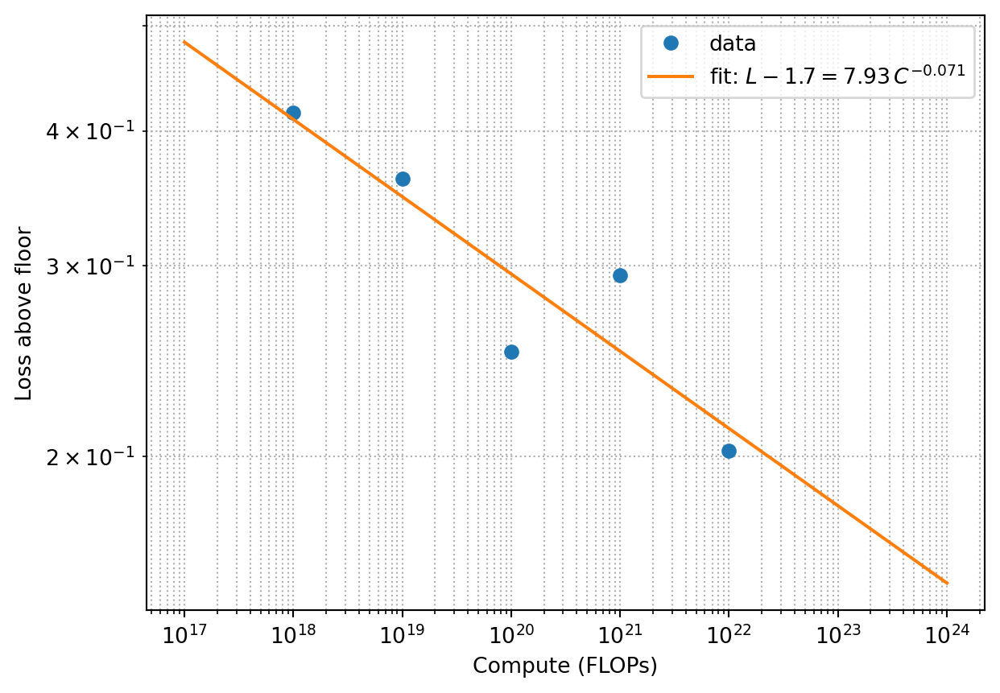

Scaling laws are the most physicist-friendly part of modern AI. The empirical claim is simple and quantitative: across many orders of magnitude, the test loss of a language model is a smooth power law in compute, data, and parameters.
5.1 The basic law
Define:
L — cross-entropy loss on held-out data (in nats per token).
N — number of non-embedding parameters.
D — number of training tokens.
C — total training compute, C \approx 6 N D FLOPs for a dense transformer.
Kaplan et al. (Kaplan et al. 2020) found that, holding others fixed,
L(N) \approx L_\infty + \left(\frac{N_c}{N}\right)^{\alpha_N}, \qquad
L(D) \approx L_\infty + \left(\frac{D_c}{D}\right)^{\alpha_D}, \qquad
L(C) \approx L_\infty + \left(\frac{C_c}{C}\right)^{\alpha_C},
with exponents around \alpha \sim 0.05–0.1. The constant L_\infty is the irreducible loss — the entropy of the data distribution itself.
A physicist will read these and immediately think power-law scaling, like critical phenomena, and proceed to be slightly disappointed because no one has produced a theory that derives the exponents from first principles. They look universal across architectures, datasets, and modalities, but no one knows why.
5.2 The compute-optimal frontier (Chinchilla)
Kaplan et al. originally argued that for a fixed compute budget C, you should spend most of it on a bigger model and relatively less on data. Hoffmann et al. (Hoffmann et al. 2022) later showed this was wrong because of how the learning rate was scheduled in the original study. Their corrected finding — the Chinchilla law — is:
For compute-optimal training, N and D should grow at roughly equal rates with C.
Concretely:
N_{\text{opt}}(C) \propto C^{1/2}, \qquad D_{\text{opt}}(C) \propto C^{1/2}.
The rule of thumb that came out of this is roughly 20 tokens per parameter. A 70B-parameter model should see roughly 1.4 T tokens to be compute-optimal.
In practice, frontier models are now trained well past Chinchilla-optimal — sometimes 50× or 100× the optimal token count — because inference cost matters too, and a smaller model trained on more tokens is cheaper to serve.
5.3 What the law buys you
The power-law form has two practical consequences:
You can plan a training run. Measure loss at small scale (10^{17}–10^{19} FLOPs), fit the exponents, and extrapolate loss for a 10^{23} FLOP run with surprisingly tight error bars. Frontier labs do this routinely.
You know there is no plateau in sight. As long as the power law holds, doubling compute reliably buys a fixed reduction in \log L. The question is whether that loss reduction corresponds to a useful capability gain — and the answer turned out to be yes far beyond what most people expected.
5.4 Emergent capabilities
A separate phenomenon, often confused with scaling laws, is that certain capabilities (arithmetic, in-context learning, instruction following) appear quite suddenly as a function of scale rather than smoothly. Whether these are genuine phase transitions or artifacts of how we measure them is debated. The smooth loss curve is robust; the emergence of specific capabilities from it is less understood.
5.5 A small fitting exercise
Suppose you measure the following losses at different compute budgets. Fit a power law and extrapolate.
import numpy as npimport matplotlib.pyplot as plt# Toy dataC = np.array([1e18, 1e19, 1e20, 1e21, 1e22])L =1.7+8.0* C**-0.07+0.02*np.random.randn(len(C))# Fit L = L_inf + a * C^-alpha (fix L_inf = 1.7 for simplicity)logy = np.log(L -1.7)logx = np.log(C)slope, intercept = np.polyfit(logx, logy, 1)alpha =-slopea = np.exp(intercept)print(f"alpha = {alpha:.3f}, a = {a:.2f}")C_plot = np.logspace(17, 24, 100)plt.loglog(C, L -1.7, "o", label="data")plt.loglog(C_plot, a * C_plot**-alpha, label=f"fit: $L - 1.7 = {a:.2f}\\, C^{{-{alpha:.3f}}}$")plt.xlabel("Compute (FLOPs)")plt.ylabel("Loss above floor")plt.legend()plt.grid(True, which="both", ls=":")plt.show()
alpha = 0.071, a = 7.93

Real-world scaling fits use much more careful methodology — multiple seeds, multiple shapes, proper learning-rate scheduling — but the spirit is the same: log-log linear fit, extrapolate carefully.
5.6 Beyond language
The same shape — smooth power-law loss in compute — has been measured for image diffusion models, multimodal models, code, and reinforcement learning from preferences. The exponents differ, but the qualitative picture is consistent. Whether all of intelligence scales like this is the most expensive open question in the field.
Hoffmann, Jordan, Sebastian Borgeaud, Arthur Mensch, et al. 2022. “Training Compute-Optimal Large Language Models.”arXiv Preprint arXiv:2203.15556.
Kaplan, Jared, Sam McCandlish, Tom Henighan, et al. 2020. “Scaling Laws for Neural Language Models.”arXiv Preprint arXiv:2001.08361.